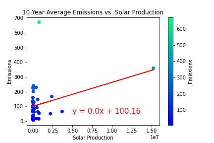
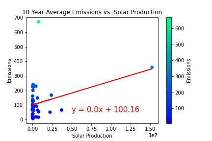

Emissions
Emissions
 Consumption
 Production
Consumption
 Production
 Population
Population
 Plot Comparison
Plot Comparison
 Our Data
Our Data
A comparision analysis of alternative energies and how they effect air quality.
The motivation for this project is to identify the impact of renewable energies and determine whether certain regions of the United States with better air quality have higher renewable energy usage. The questions we are looking to answer:
For this project we hit 3 different APIs. From NREL we collected Emissions data. There are several types of air pollutants, but we focused on CO2. CO2 accounts for 75% of greenhouse gas emissions and is a direct result of fossil fuel combustion. Next, from the US Census Bureau’s API, we collected population data for each state Lastly, our most important resource was the Energy Information Administration API, where we collected data about energy production and consumption. Our analysis focused on the years between 2008 and 2017.